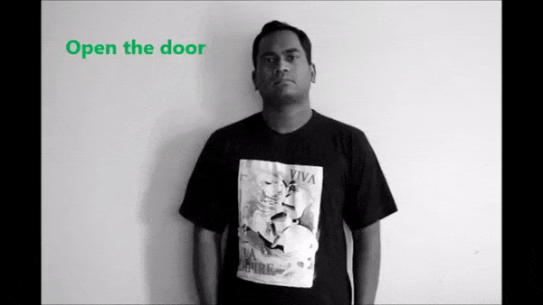
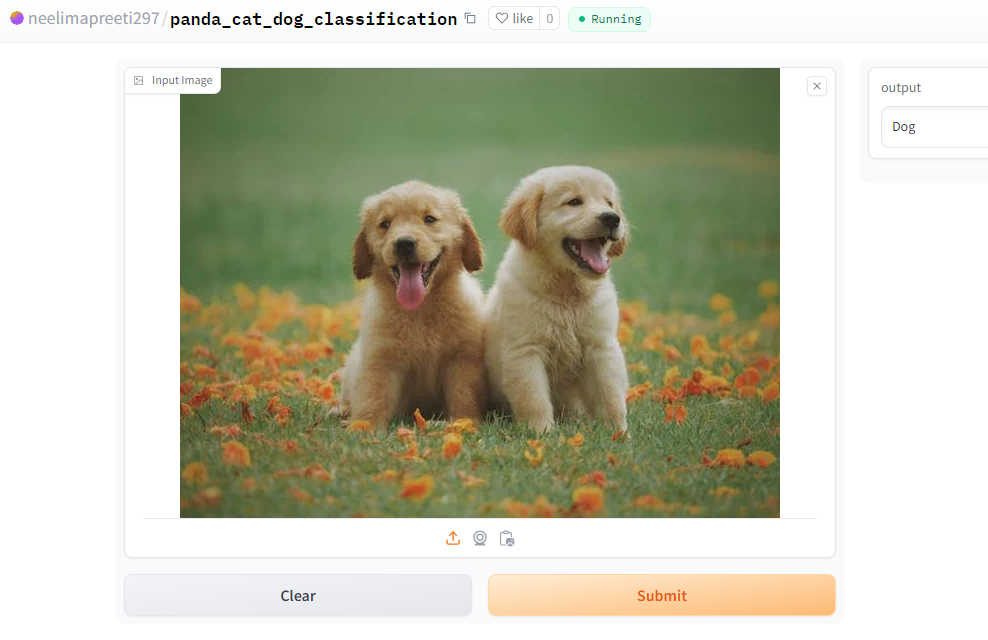
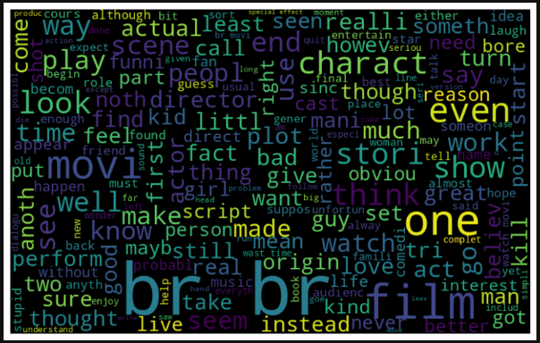
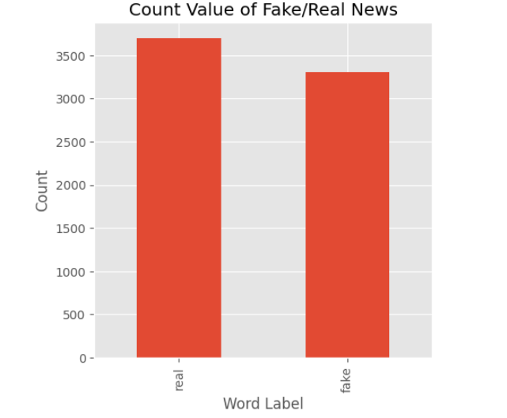
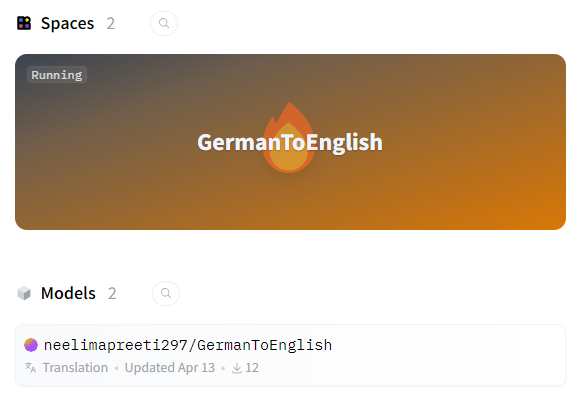

- All
- Computer Vision
- Image Processing
- Deep Learning
- NLP

Sign Language Interpreter
- Developed real-time sign-to-text conversion feature with custom-made dataset and object detection.
- Captured real-time pictures for tailoring the dataset and text-to-sign conversion feature along with overseeing dictionary feature for sign language.
- Followed the Software Development Life Cycle (SDLC) rigorously, from drafting the Software Requirements Specification (SRS) in LaTeX to integrate Continuous Integration (CI) using GitHub Actions.
- Domain: Computer Vision, Software Engineering

Image Classification
- Developed an app space that is going to classify between dog, cat, and panda.
- Trained a custom model with a custom dataset for classification.
- Deployed the model and app in HuggingFace.
- Domain: Image Processing, Computer Vision, Deep Learning

Sentiment Analysis of Movie Reviews (NSDC Data Science Projects)
- Developed a sentiment analysis model to classify movie reviews as positive or negative using supervised learning techniques.
- Utilized Natural Language Processing (NLP) to preprocess text and extract features from the reviews.
- Created a Word Cloud visualization to highlight the most frequent words in the dataset, aiding in feature analysis.
- Domain: Natural Language Processing, Machine Learning, Data ScienceDomain: Natural Language Processing, Machine Learning, Data Science

Fake News Detection (NSDC - HerWILL Data Science Contest)
- The project utilizes Natural Language Processing (NLP) techniques for text representation in a feature space, enabling machine learning-based classification.
- The primary objective is to perform binary classification to detect fake news versus real news using extracted linguistic and statistical features.
- The classification models implemented are Multinomial Naive Bayes and Support Vector Machine (SVM) for supervised learning on the labeled dataset.
- Domain: Natural Language Processing, Machine Learning

German to English Translator
- Developed an app space that is going to translate German language to English language
- Trained a custom model with transformer architecture.
- Deployed the model and app in HuggingFace.
- Domain: Neural Machine Translation, Deep Learning